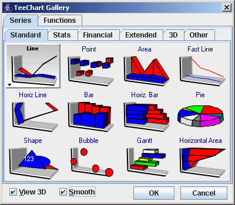

다음
|
|
목차 다음 |
들어가기 - 챠트 만들기 와 데이터 시리즈 채우기
내용
소개
챠트 만들기
티 챠트 폼에 포함시키기
새로운 데이터 시리즈 채우기
챠트 에디터
실행시 챠트 에디터 접근
챠트 시리즈 갤러리
필요에 맞는 시리즈 타입 선택하기
 이 컴포넌트들은 차트와 시리즈 간에 차트 축으로 인터페이스가 되며 함께 작업이 됩니다. 시리즈는 데이터를 지니며 그 값은 라벨 특성과 차트 축에 영향을 줍니다. 축의 외관, 색상, 그리드 빈도수, 라벨 글꼴은 데이터 시리즈를 추가하기 전에도 차트를 정의할 수 있게 해 줍니다. Teechart는 차트와 시리즈 속성을 미리 정의할 필요성을 최소화 해 주어 대부분의 값에 대해 가장 정확한 측정치를 내게 해 줄 것입니다. |
본 자습서의 본 단계에서는 차트 폼 스크래치를 만드는 것의 용이함을 강조하면서, 이후에 다루어 질 내용들을 통해서 차트 에디터를 가지고 차트의 외관과 기능을 변경하고 향상시키는 것에 대해 소개하고 있습니다. 즐겁게 차트를 만드세요!

위 아이콘(3번째)을 선택하고 클릭한후 폼안에 Tchart 크기로 드래그하십시오.
몇가지 기본챠트모양에 대하여 축과 제목에 대하여 티챠트 페널에서 볼수 있습니다.
Series bar = new Bar(tChart1.getChart()); tChart1.getAxes().getBottom().setIncrement(1); bar.add(400, "pears", Color.Green); bar.add(500, "apples", Color.Red); bar.add(400, "bananas", Color.Yellow); bar.add(200, "oranges", Color.Orange);
시리즈 추가의 메소드는 값, 라벨 그리고 색상의 세 변수를 받아들입니다. 이 추가 메서드는 라벨 축(여기서는 X-A 축) 위에서의 값이 일정한 간격을 가정하게 합니다. 만약 당신의 데이터가 2개의 변수를 가진다면 ADDXY 메서드를 사용할 수 있습니다. 또 다른 명령 버튼을 당신의 프로젝트에 추가하고 이 코드를 그 곳에 입력시키십시오. 프로젝트를 실행시키고 이 코드를 이용하여 포인트를 추가하십시오. : :
Random rnd = new Random();
Series bar = new Bar(tChart1.getChart());
if (bar.getCount() > 0)
{
// Increment X Axis value and add a new random point
bar.add((bar.getXValues().getLast() + rnd.nextInt(10)),
((bar.getYValues().getLast() / (bar.getYValues().getLast() - 1.0)) +
rnd.nextInt(10)), "Lemons", Color.GreenYellow);
}
else
{
// Add a new random point
bar.add(1, rnd.nextInt(10), "Lemons", Color.Yellow);
}
진행하고자 하는 폼에 위치와 컴맨드버튼과 선택하여 챠트에디터를 추가합니다. 더블클릭하여 코드에 아래라인을 추가합니다.
ChartEditor.editChart(tChart2.getChart());
프로젝트를 실행하고 버튼을 클릭하여 챠트 에디터를 봅니다.
실행시에 챠트에디터는 일반적으로 사용하는 차트속성을 추가할수 있습니다.
새로운 시리즈를 추가하려면 Add... b버튼을 마우스 클릭하고 시리즈 갤러리 중에서 시리즈 유형을 선택하십시오. 지금 선택한 시리즈 유형은 나중에 원한다면 최초의 에디터 화면으로 가서 Change..버튼을 선택하면 변경할 수도 있습니다. (시리즈 데이터 내용이 호환성이 없는 경우에는 예외가 있을 수도 있습니다. ) .

시리즈 갤러리는 6개의 탭 페이지로 이루어져 있습니다.:
표준
표준 시리즈 유형은 가장 자주 이용되는 것입니다.
금융
금융시리즈는 더욱 전문화된 금융시리즈 타입의 금융어플리케이션을 포함합니다.
통계
통계시리즈는 더욱 전문화된 통계 시리즈 타입을 플래닝 또는 매핑 어플리케이션을 포함합니다.
확장된 시리즈
확장된 시리즈는 더욱 전문화된 시리즈 타입으로 금융, 플래닝, 또는 매핑 어플리케이션을 포함합니다.
3D
3D 시리즈 타입, 3차원(X,Y,Z) 형태를 표현합니다. variables.
Other
Miscellaneous 시리즈 타입.
시리즈 유형을 선택하십시오. 연습을 위해 여기서는 바 시리즈 유형을 선택하겠습니다. 갤러리가 닫히고 최초의 차트 에디터 화면에서 새로운 시리즈가 디스플레이 될 것입니다. .
지난 코드 예제에서는 새로운 X값과 Y값을 생성했습니다. 이 X축에서 점들 사이의 거리는 일정하지 않기 때문에 어떤 경우에는 바들이 겹치기도 합니다. 이런 이유로 이것은 모든 응용프로그램에서 항상 바람직한 것은 아닙니다. 차트 에디터를 사용하여 시리즈 유형을 바꾸면(설계시에 차트 에디터에 들어가 첫번째 페이지에서 Change 버튼을 사용합니다) LineSeires가 두가지 변수로 데이터를 그래픽으로 보여주는 대안을 볼 수 있습니다. 만약 당신의 데이터가 2개 이상의 변수를 가지고 있다면 이 데이터를 디스플레이 하는 데 적합한 또 다른 시리즈 유형들이 있습니다. 아래에 있는 테이블에서는 Teechart 시리즈 유형의 구성들을 볼 수 있습니다.
|
시리즈 타입 |
변수의 수 |
데이터소스 속성 |
|
기본 타입 |
||
| 2 |
XValues, YValues, XLabel |
|
| 2 |
XValues, YValues, XLabel |
|
| 2 |
XValues, YValues, XLabel |
|
| 2 |
XValues, YValues (called Bar), XLabel |
|
| 2 |
XValues, YValues (called Bar), XLabel |
|
| 2 |
XValues, YValues, XLabel |
|
| 2 |
XValues, YValues, XLabel |
|
| 2 |
Xvalues, YValues, XLabel |
|
| 1 |
PieValues, XLabel |
|
| 4 |
StartXValues, StartYValues, XLabel, EndXValues, EndYValues |
|
| 3 |
Xvalues, YValues, XLabel, RadiusValues |
|
| 3 |
StartValues, EndValues, AY (Y axis level), AXLabel (Label optionally shown on Y-axis or as mark) |
|
| 4 |
X0 (Top), Y0 (Bottom), X1 (Left), Y1 (Right) |
|
|
확장 타입 |
||
| 2 |
XValues, YValues, XLabel |
|
| 5 |
OpenValues, CloseValues, HighValues, LowValues, DateValues |
|
| 3 |
XValues, YValues, XLabel, ZValues |
|
| 3 |
XValues, YValues, XLabel, ErrorValues |
|
| 3 |
XValues, YValues, XLabel, ZValues |
|
| 2 |
XValues, YValues, Labels (Polar has Angle and Radius) |
|
| 2 |
XValues, YValues, Labels (Radar has Angle and Radius) |
|
| 3 |
XValues, YValues, ZValues |
|
| 2 |
XValues, YValues (VolumeValues), XLabel |
 |